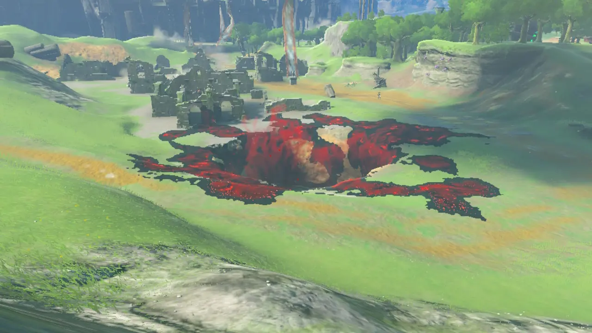

La carte est séparée en trois carte d’abord une carte souterraine ensuite
une carte Terrestre et la carte céleste. Ce qui constitue une bien plus grande carte que dans le premier jeu.
Souterraine
Cette carte est accessible par la terre ferme par de grand trous dans le sol. Comme sur cette photo.

Si vous voyez quelque chose de lumineux et de couleur claire dans les souterrains cela veut dire
que c’est une racine. Les racines agissent un peu comme des tours ce qui rajoute
des détails sur la carte de la « Tablette Pru'ha » et qui fait de la lumière
dans les alentours de la racine. Et comme avec les tours tu peux
te téléporter à l’emplacement des racines.
Dans la caverne si vous voyez de petite lumière bleue ce sont des esprits.
Les esprits servent à acheter des choses.
Pour acheter des choses vous pouvez aller au fort de guet
et dans un des bâtiments il y a une statue en pierre que vous pouvez interagir avec
et il vous échangera des esprits contre des matériaux et autres.
Des minerais de sonium qui permettent de fabriquer des cellules
de batteries qui permettent d’avoir plus de batteries sans avoir besoin de recharger.
Terrestre
C’est sur cette carte que se passera la majeure partie de l’histoire.
Uniquement sur cette carte se trouve les tours qui permettent de
compléter cette carte sur la tablette et envoie le personnage jouable
très haut dans le ciel ce qui permet de rejoindre des îles célestes.
Si vous n’arrivez pas à utiliser les tours, Regarder l’onglet « Comment bien commencer le jeu ? ».
C'est la seule carte qui est la même que dans le premier jeu.
Dans cette carte (et dans certaines îles de la carte céleste) on peut trouver des
cavernes dans lesquelles on peut trouver des monstres, des matériaux et des choses
à manger comme des champignons ou des poissons. Sur cette carte et sur la carte céleste,
il y a des sanctuaires qui sont de grosses
pierres avec une lumière verte au-dessus. Les sanctuaires vous rendent plus fort
et permet d’avoir plus de réceptacles de cœurs et plus d’endurance ce qui est très utile
et indispensable pour pouvoir avancer dans le jeu.
Sur cette carte et sur la carte céleste, il y a des sanctuaires qui sont de grosses
pierres avec une lumière verte au-dessus. Les sanctuaires vous rendent plus fort et
permet d’avoir plus de réceptacles de cœurs et plus d’endurance ce qui est très utile
et indispensable pour pouvoir avancer dans le jeu.

Céleste
Sur cette carte, on peut trouver des bosses comme les golemax qui sont de grands robots
fait de cubes. Pour les battre, il suffit d’utiliser la capacité Emprise et d’extraire
le cube vert lumineux pour l’immobiliser et pouvoir l’attaquer.
C’est seulement en attaquant le cube vert que l’on peut faire des dégâts au boss.
Sur la carte céleste, il y a aussi des petits défis où il faut récupérer un caillou
vert et le ramener vers un certain endroit ce qui donne accès à un sanctuaire.
On peut aussi jouer à des mini-jeux où on doit faire une course en chute-libre et
qui te donne une tenue ou des matériaux.
Voici quelques nombres sur les éléments présents sur les cartes :
|
Souterraine |
Terrestre |
Céleste |
| Nombre de sanctuaires |
0 |
120 |
32 |
| Nombre de racines |
120 |
- |
- |